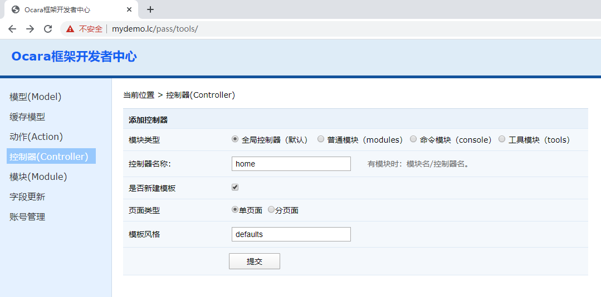

1.2-新建首页
1、新建首页控制器 （1）在浏览器输入http://localhost/dev，进入开发者中心，登录的用户名和密码都是“root”。 （2）选择左边的控制器（Controller），在右边的区域，输入控制器名称home。 （3）点击确定。  2、新建action 新建了控制器，框架默认自动生成了一个index的动作。我们暂时就直接使用index。 3、打印输出 建立控制器和action成功后，我们就可以进入application/controller/home/actions目录。 然后，在其中的index.php的动作类文件中，输出“Hello World！”。class IndexAction extends HomeController { /** * 初始化 */ public function _action() { ocPrint('Hello World!'); } }这里，再次在浏览器中运行http://localhost,则会打印出“Hello World!”。